library(haven)
library(ggplot2)
library(data.table)
Tab <- function(data, var1, code, var2) {
data <- as.data.frame(data)
i <- which(names(data) == var1)
j <- which(names(data) == var2)
n <- nrow(data[data[, i] == code, ])
tableA <- table(data[data[, i] == code, j])
Table1 <- cbind(Freq. = tableA,
Percent = tableA / n * 100,
Cum. = cumsum(tableA) / n * 100) |> data.frame()
Table1 <- rbind(Table1, Total = c(sum(Table1$Freq.), sum(Table1$Percent), ''))
Table1[,c(1:ncol(Table1))] <- Table1[,c(1:ncol(Table1))] |> unlist() |> as.numeric()
Table1 <- round(Table1, 3)
return(Table1)
}作業五六七
前言
人口學的普查或調查，通常著重於生死結離的蒐集與紀錄，而較少針對某一概念進行訪問，也因此缺乏能夠建構指數的資料，因此我們找出了與人口生活較相關的幾個指數，來進行分析。
由於這些題組缺乏能夠與之進行外在鑑別的問題，因此在部分資料上我們將題組進行切分，有用於建構指數的變項用於內在鑑別，其他則用於外在鑑別。
匯入套件及自訂函式
世界價值觀調查-安全

WVS <- read_dta("../../../HW/WVS2019_TW.dta") |> setDT()
WVS <- WVS[, paste0('Q', 131:138)]
WVS <- lapply(WVS[, paste0('Q', 131:138)],
function(x) {ifelse(!(x %in% c(1, 2, 3, 4)), NA, x)}) |> setDT()
WVS <- na.omit(WVS)
WVS <- WVS[,MH := Q132 + Q133 + Q134 + Q135 + Q136 + Q137 + Q138]
data1 <- WVS[, .(Q131,Q132, Q133, Q134, Q135, Q136, Q137, Q138, MH = MH)] |> data.frame()
tableA <- table(data1[, 'MH'])
tableB <- cumsum(tableA)
Table1 <- cbind(Freq. = tableA,
Percent = round(tableA / nrow(data1) * 100, 2),
Cum. = round(tableB / nrow(data1) * 100, 2)) |> data.frame()
Table1 <- rbind(Table1, Total = c(sum(Table1$Freq.), sum(Table1$Percent), ''))
Table1 Freq. Percent Cum.
11 1 0.09 0.09
14 1 0.09 0.17
15 2 0.17 0.34
16 6 0.51 0.85
17 4 0.34 1.19
18 6 0.51 1.7
19 10 0.85 2.56
20 25 2.13 4.68
21 40 3.41 8.09
22 46 3.92 12.01
23 57 4.86 16.87
24 63 5.37 22.23
25 103 8.77 31.01
26 132 11.24 42.25
27 193 16.44 58.69
28 485 41.31 100
Total 1174 100.01 ggplot()+
geom_bar(data = data1, aes(x = MH))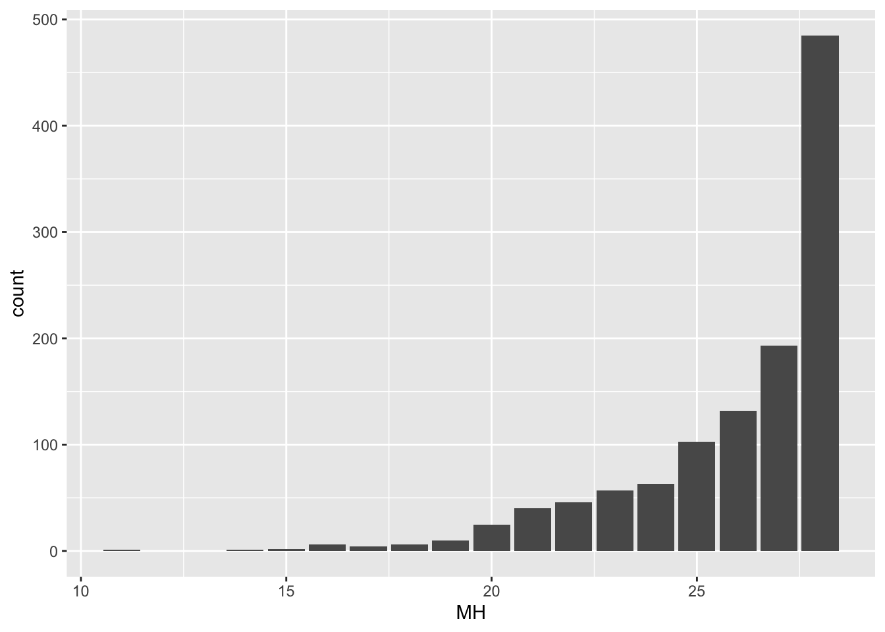
內部鑑別
Tab(data1, 'Q132', 4, 'MH') Freq. Percent Cum.
18 2 0.211 0.211
19 1 0.106 0.317
20 3 0.317 0.634
21 6 0.634 1.268
22 21 2.220 3.488
23 30 3.171 6.660
24 39 4.123 10.782
25 75 7.928 18.710
26 104 10.994 29.704
27 180 19.027 48.732
28 485 51.268 100.000
Total 946 100.000 NAggplot()+
geom_line(data = data1, aes(x = MH), stat = "count")+
geom_bar(data = data1[data1$Q132 == 4, ], aes(x = MH))
Q132等於4時的分佈情形與指數一致，對指數建構有貢獻，具有內在鑑別力。
Tab(data1, 'Q133', 4, 'MH') Freq. Percent Cum.
20 1 0.167 0.167
22 1 0.167 0.334
23 3 0.501 0.835
24 4 0.668 1.503
25 19 3.172 4.674
26 24 4.007 8.681
27 62 10.351 19.032
28 485 80.968 100.000
Total 599 100.000 NAggplot()+
geom_line(data = data1, aes(x = MH), stat = "count")+
geom_bar(data = data1[data1$Q133 == 4, ], aes(x = MH))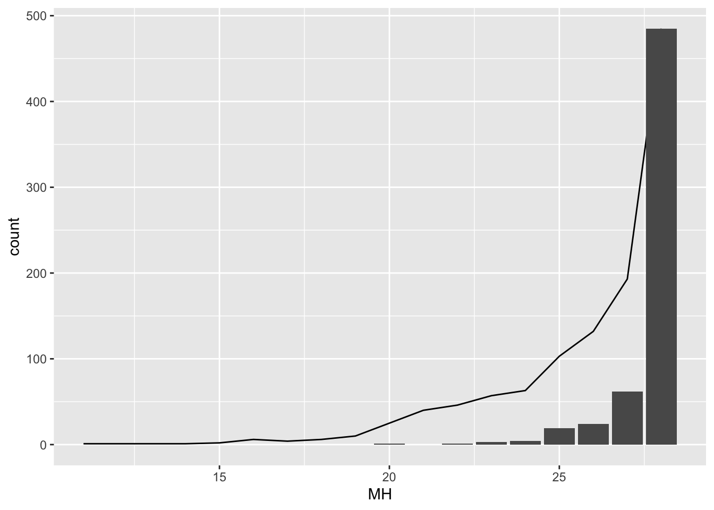
Q133等於4時的分佈情形與指數一致，對指數建構有貢獻，具有內在鑑別力。
Tab(data1, 'Q134', 4, 'MH') Freq. Percent Cum.
14 1 0.099 0.099
16 1 0.099 0.198
18 2 0.198 0.396
19 4 0.396 0.793
20 4 0.396 1.189
21 9 0.892 2.081
22 22 2.180 4.262
23 34 3.370 7.631
24 41 4.063 11.695
25 89 8.821 20.515
26 127 12.587 33.102
27 190 18.831 51.933
28 485 48.067 100.000
Total 1009 100.000 NAggplot()+
geom_line(data = data1, aes(x = MH), stat = "count")+
geom_bar(data = data1[data1$Q134 == 4, ], aes(x = MH))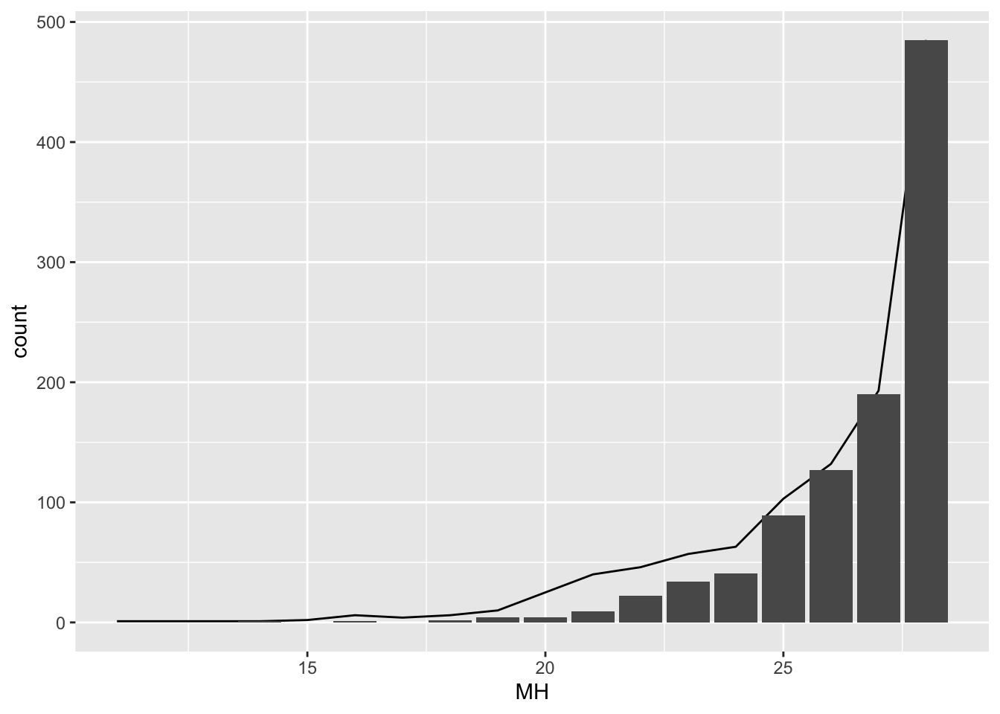
Q134等於4時的分佈情形與指數一致，對指數建構有貢獻，具有內在鑑別力。
Tab(data1, 'Q135', 4, 'MH') Freq. Percent Cum.
16 1 0.108 0.108
18 1 0.108 0.215
19 3 0.323 0.538
20 4 0.431 0.969
21 3 0.323 1.292
22 13 1.399 2.691
23 25 2.691 5.382
24 42 4.521 9.903
25 64 6.889 16.792
26 111 11.948 28.741
27 177 19.053 47.793
28 485 52.207 100.000
Total 929 100.000 NAggplot()+
geom_line(data = data1, aes(x = MH), stat = "count")+
geom_bar(data = data1[data1$Q135 == 4, ], aes(x = MH))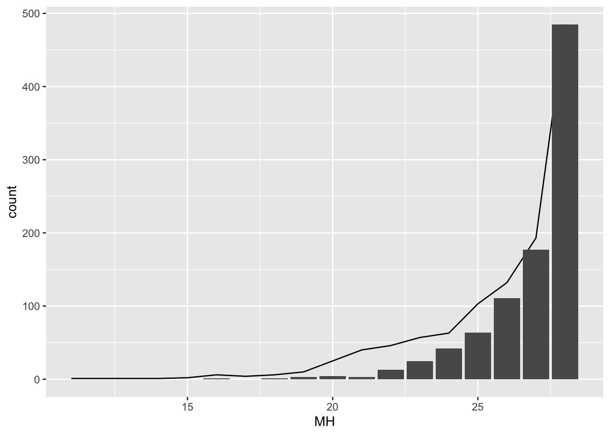
Q135等於4時的分佈情形與指數一致，對指數建構有貢獻，具有內在鑑別力。
Tab(data1, 'Q136', 4, 'MH') Freq. Percent Cum.
17 1 0.099 0.099
20 3 0.298 0.398
21 8 0.795 1.193
22 19 1.889 3.082
23 31 3.082 6.163
24 50 4.970 11.133
25 91 9.046 20.179
26 127 12.624 32.803
27 191 18.986 51.789
28 485 48.211 100.000
Total 1006 100.000 NAggplot()+
geom_line(data = data1, aes(x = MH), stat = "count")+
geom_bar(data = data1[data1$Q136 == 4, ], aes(x = MH))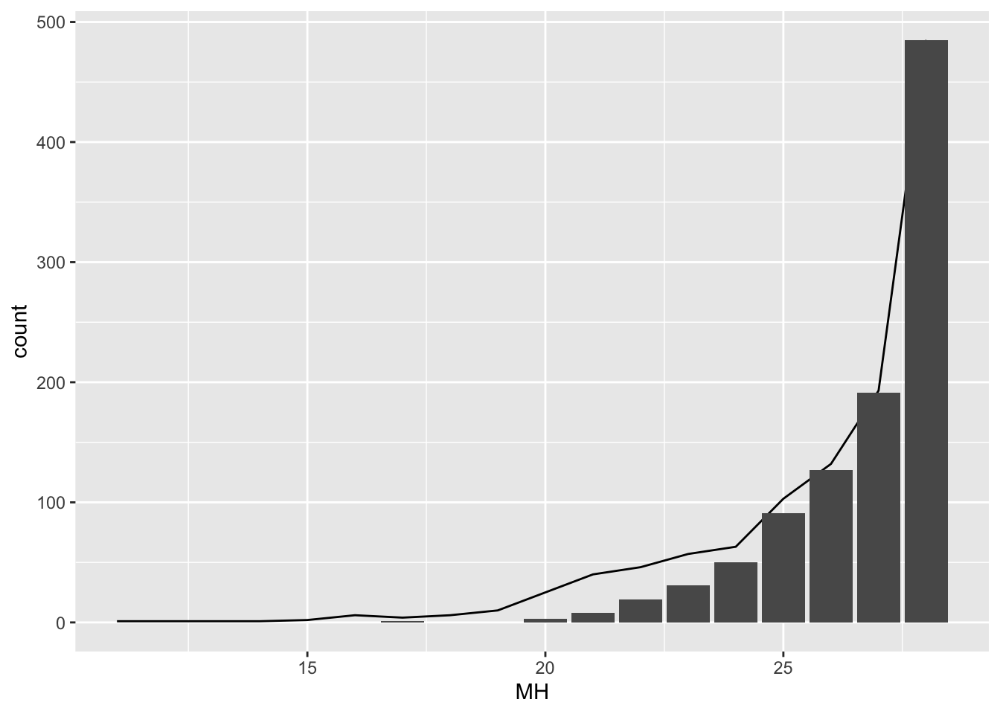
Q136等於4時的分佈情形與指數一致，對指數建構有貢獻，具有內在鑑別力。
Tab(data1, 'Q137', 4, 'MH') Freq. Percent Cum.
19 1 0.120 0.120
21 1 0.120 0.240
22 1 0.120 0.361
23 11 1.322 1.683
24 23 2.764 4.447
25 47 5.649 10.096
26 93 11.178 21.274
27 170 20.433 41.707
28 485 58.293 100.000
Total 832 100.000 NAggplot()+
geom_line(data = data1, aes(x = MH), stat = "count")+
geom_bar(data = data1[data1$Q137 == 4, ], aes(x = MH))Q137等於4時的分佈情形與指數一致，對指數建構有貢獻，具有內在鑑別力。
Tab(data1, 'Q138', 4, 'MH') Freq. Percent Cum.
17 1 0.106 0.106
19 4 0.425 0.531
20 3 0.318 0.849
21 3 0.318 1.168
22 11 1.168 2.335
23 15 1.592 3.928
24 38 4.034 7.962
25 73 7.749 15.711
26 121 12.845 28.556
27 188 19.958 48.514
28 485 51.486 100.000
Total 942 100.000 NAggplot()+
geom_line(data = data1, aes(x = MH), stat = "count")+
geom_bar(data = data1[data1$Q138 == 4, ], aes(x = MH))
Q138等於4時的分佈情形與指數一致，對指數建構有貢獻，具有內在鑑別力。
外部鑑別
Tab(data1, 'Q131', 1, 'MH') Freq. Percent Cum.
16 1 0.161 0.161
17 1 0.161 0.321
18 1 0.161 0.482
19 2 0.321 0.803
20 5 0.803 1.605
21 9 1.445 3.050
22 10 1.605 4.655
23 13 2.087 6.742
24 24 3.852 10.594
25 44 7.063 17.657
26 55 8.828 26.485
27 117 18.780 45.265
28 341 54.735 100.000
Total 623 100.000 NAggplot()+
geom_line(data = data1, aes(x = MH), stat = "count")+
geom_bar(data = data1[data1$Q131 == 1, ], aes(x = MH))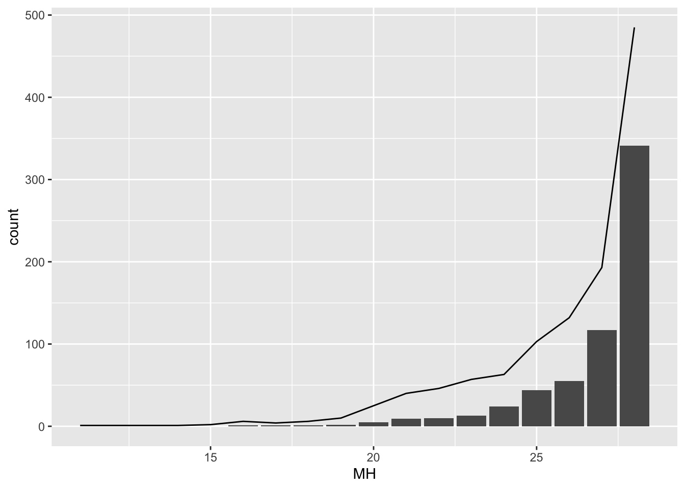
Q131等於1時的分佈情形與指數一致，具有外在鑑別力。（本題編碼方向不同）
臺灣社會變遷基本調查 7期1次 工作與生活
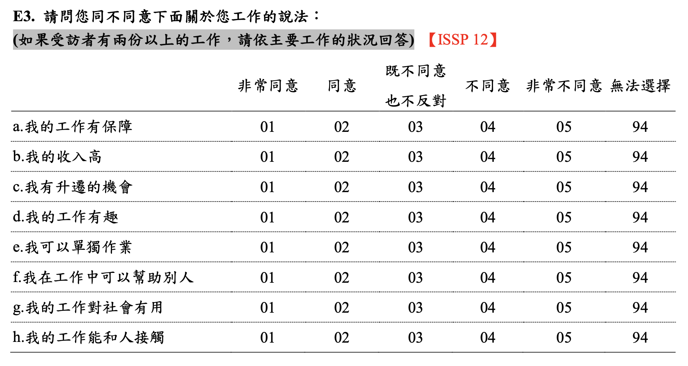
tscs152 <- read_dta("../../../HW/tscs152.dta", encoding = "big-5") |> setDT()
tscs152 <- (tscs152[!(e3a > 5 | e3b > 5 | e3c > 5 | e3d > 5 | e3e > 5 | e3f > 5 | e3g > 5 | e3h > 5), ]
[, ":="(WK = e3a + e3b + e3c+ e3d + e3e)])
data1 <- tscs152[, .(e3a, e3b, e3c, e3d, e3e, e3f, e3g, e3h, WK = WK)] |> data.frame()內部鑑別
# WK #
tableA <- table(data1[, 'WK'])
tableB <- cumsum(tableA)
Table1 <- cbind(Freq. = tableA,
Percent = round(tableA / nrow(data1) * 100, 2),
Cum. = round(tableB / nrow(data1) * 100, 2)) |> data.frame()
Table1 <- rbind(Table1, Total = c(sum(Table1$Freq.), sum(Table1$Percent), ''))
Table1 Freq. Percent Cum.
5 13 1.05 1.05
6 9 0.73 1.78
7 21 1.69 3.47
8 24 1.94 5.41
9 60 4.84 10.25
10 139 11.22 21.47
11 98 7.91 29.38
12 170 13.72 43.1
13 98 7.91 51.01
14 198 15.98 66.99
15 72 5.81 72.8
16 142 11.46 84.26
17 57 4.6 88.86
18 83 6.7 95.56
19 14 1.13 96.69
20 23 1.86 98.55
21 8 0.65 99.19
22 8 0.65 99.84
23 1 0.08 99.92
25 1 0.08 100
Total 1239 100.01 ggplot()+
geom_bar(data = data1, aes(x = WK))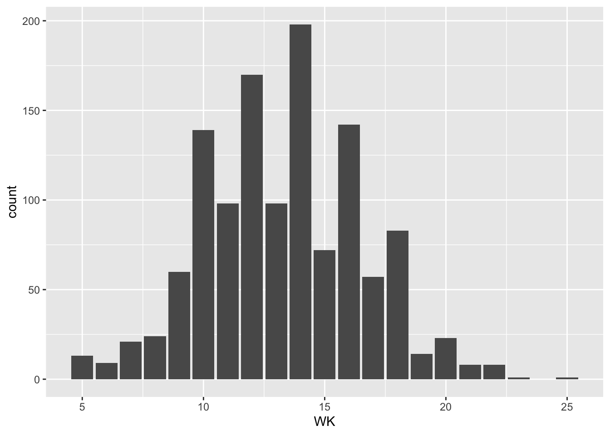
查看指數分佈情形。
# e3a #
Tab(data1, 'e3a', 1, 'WK') Freq. Percent Cum.
5 13 5.752 5.752
6 9 3.982 9.735
7 18 7.965 17.699
8 15 6.637 24.336
9 47 20.796 45.133
10 19 8.407 53.540
11 37 16.372 69.912
12 22 9.735 79.646
13 22 9.735 89.381
14 10 4.425 93.805
15 8 3.540 97.345
16 2 0.885 98.230
17 2 0.885 99.115
18 1 0.442 99.558
21 1 0.442 100.000
Total 226 100.000 NAggplot()+
geom_line(data = data1, aes(x = WK), stat = "count")+
geom_bar(data = data1[data1$e3a == 1, ], aes(x = WK))
可以看出e3a的填答1時，和其他問題的數值合，其分布不集中在數值較低者，意即當填答者回答e3a為1時，其他題目的回答多半不是1，答題者面對問題e3a和其他問題時的填答方向不一致，因此推論問題e3a在此與其它題目的的內部一致性不高，不具有內部鑑別力。
# e3b #
Tab(data1, 'e3b', 1, 'WK') Freq. Percent Cum.
5 13 23.636 23.636
6 4 7.273 30.909
7 10 18.182 49.091
8 6 10.909 60.000
9 9 16.364 76.364
10 2 3.636 80.000
11 5 9.091 89.091
12 1 1.818 90.909
13 5 9.091 100.000
Total 55 100.000 NAggplot()+
geom_line(data = data1, aes(x = WK), stat = "count")+
geom_bar(data = data1[data1$e3b == 1, ], aes(x = WK))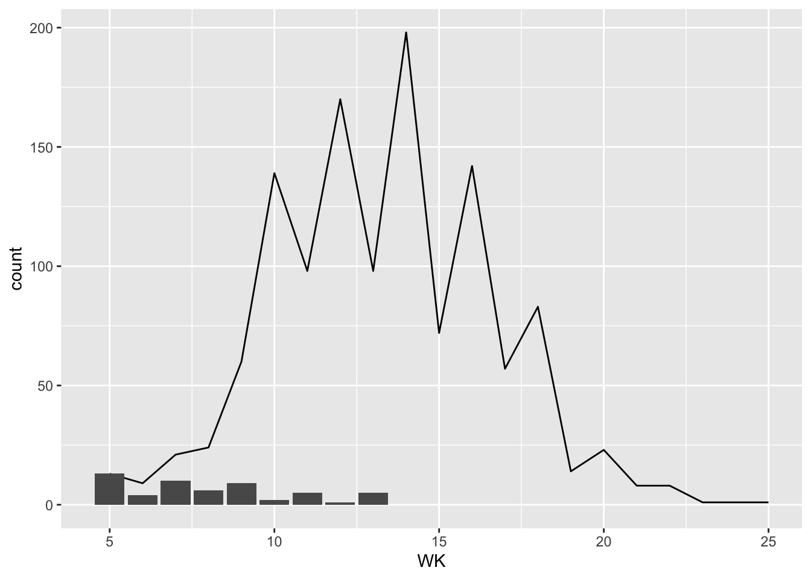
可以看出e3b的填答1時，和其他問題的數值合，其分布是集中在數值較低者，意即當填答者回答e3b為1時，其他題目的回答最多是，而不是1者，回答也傾向低分項，答題者面對問題e3b和其他問題時的填答方向呈現一致，因此推論問題e3b在此與其它題目的的內部一致性高，具有內部鑑別力。
# e3c #
Tab(data1, 'e3c', 1, 'WK') Freq. Percent Cum.
5 13 22.034 22.034
6 6 10.169 32.203
7 14 23.729 55.932
8 2 3.390 59.322
9 6 10.169 69.492
10 4 6.780 76.271
11 5 8.475 84.746
12 7 11.864 96.610
13 1 1.695 98.305
14 1 1.695 100.000
Total 59 100.000 NAggplot()+
geom_line(data = data1, aes(x = WK), stat = "count")+
geom_bar(data = data1[data1$e3c == 1, ], aes(x = WK))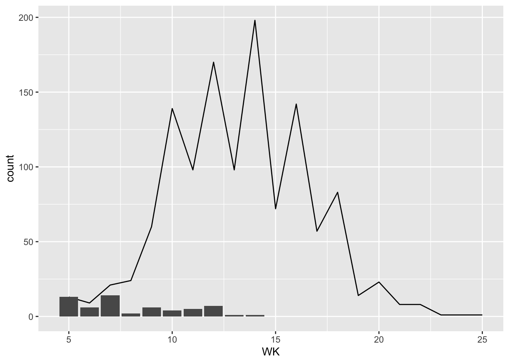
可以看出e3c的填答1時，和其他問題的數值合，其分布是集中在數值較低者，意即當填答者回答e3c為1時，其他題目的回答最多是，而不是1者，回答也傾向低分項，答題者面對問題e3c和其他問題時的填答方向呈現一致，因此推論問題e3c在此與其它題目的的內部一致性高，具有內部鑑別力。
# e3d #
Tab(data1, 'e3d', 1, 'WK') Freq. Percent Cum.
5 13 8.904 8.904
6 8 5.479 14.384
7 13 8.904 23.288
8 15 10.274 33.562
9 14 9.589 43.151
10 21 14.384 57.534
11 13 8.904 66.438
12 13 8.904 75.342
13 14 9.589 84.932
14 12 8.219 93.151
15 4 2.740 95.890
16 3 2.055 97.945
17 3 2.055 100.000
Total 146 100.000 NAggplot()+
geom_line(data = data1, aes(x = WK), stat = "count")+
geom_bar(data = data1[data1$e3d == 1, ], aes(x = WK))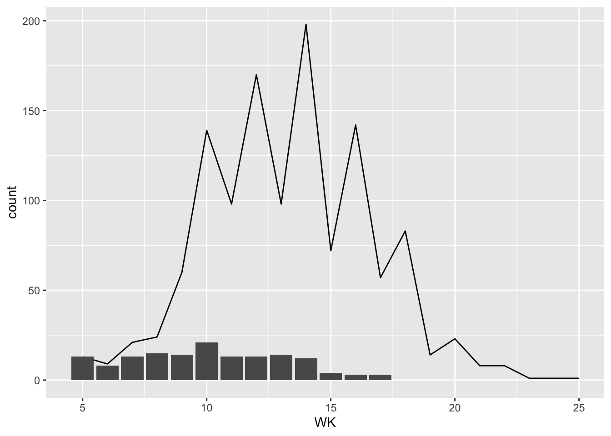
可以看出e3d的填答1時，和其他問題的數值合，其分布不集中在數值較低者，意即當填答者回答e3d為1時，其他題目的回答多半不是1，答題者面對問題e3d和其他問題時的填答方向不一致，因此推論問題e3d在此與其它題目的的內部一致性不高，不具有內部鑑別力。
# e3e #
Tab(data1, 'e3e', 1, 'WK') Freq. Percent Cum.
5 13 6.075 6.075
6 9 4.206 10.280
7 10 4.673 14.953
8 16 7.477 22.430
9 17 7.944 30.374
10 22 10.280 40.654
11 17 7.944 48.598
12 28 13.084 61.682
13 22 10.280 71.963
14 16 7.477 79.439
15 12 5.607 85.047
16 13 6.075 91.121
17 11 5.140 96.262
18 4 1.869 98.131
20 2 0.935 99.065
21 2 0.935 100.000
Total 214 100.000 NAggplot()+
geom_line(data = data1, aes(x = WK), stat = "count")+
geom_bar(data = data1[data1$e3e == 1, ], aes(x = WK))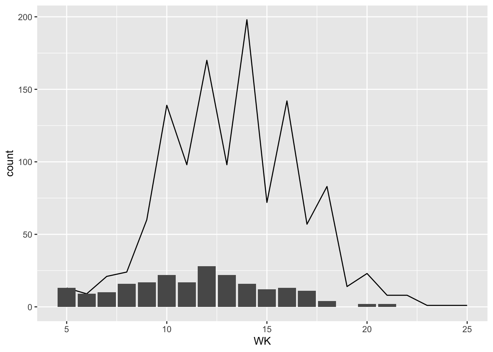
可以看出e3e的填答1時，和其他問題的數值合，其分布不集中在數值較低者，意即當填答者回答e3e為1時，其他題目的回答多半不是1，答題者面對問題e3e和其他問題時的填答方向不一致，因此推論問題e3e在此與其它題目的的內部一致性不高，不具有內部鑑別力。
外部鑑別
# e3f #
Tab(data1, 'e3f', 1, 'WK') Freq. Percent Cum.
5 12 5.742 5.742
6 6 2.871 8.612
7 12 5.742 14.354
8 11 5.263 19.617
9 16 7.656 27.273
10 27 12.919 40.191
11 24 11.483 51.675
12 26 12.440 64.115
13 13 6.220 70.335
14 28 13.397 83.732
15 7 3.349 87.081
16 10 4.785 91.866
17 8 3.828 95.694
18 3 1.435 97.129
19 1 0.478 97.608
20 2 0.957 98.565
21 2 0.957 99.522
22 1 0.478 100.000
Total 209 100.000 NAggplot()+
geom_line(data = data1, aes(x = WK), stat = "count")+
geom_bar(data = data1[data1$e3f == 1, ], aes(x = WK))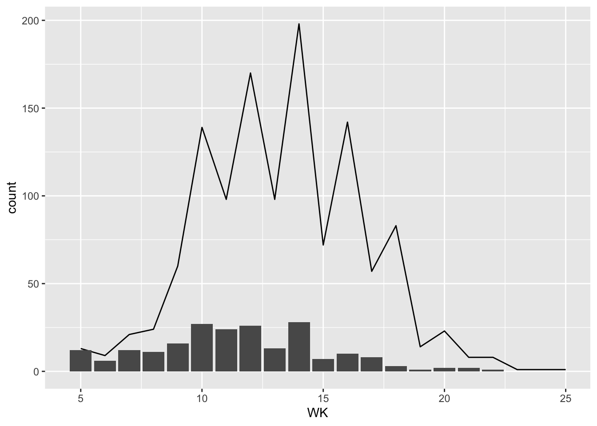
可以看出e3f的填答1時，和其他問題的數值合，其分布不集中在數值較低者，意即當填答者回答e3f為1時，其他題目的回答多半不是1，答題者面對問題e3f和其他問題時的填答方向不一致，因此推論問題e3f在此與指數中的題目一致性不高，不具有外部鑑別力。
# e3g #
Tab(data1, 'e3g', 1, 'WK') Freq. Percent Cum.
5 11 5.093 5.093
6 6 2.778 7.870
7 13 6.019 13.889
8 14 6.481 20.370
9 16 7.407 27.778
10 30 13.889 41.667
11 23 10.648 52.315
12 23 10.648 62.963
13 12 5.556 68.519
14 24 11.111 79.630
15 7 3.241 82.870
16 14 6.481 89.352
17 13 6.019 95.370
18 6 2.778 98.148
20 1 0.463 98.611
21 2 0.926 99.537
22 1 0.463 100.000
Total 216 100.000 NAggplot()+
geom_line(data = data1, aes(x = WK), stat = "count")+
geom_bar(data = data1[data1$e3g == 1, ], aes(x = WK))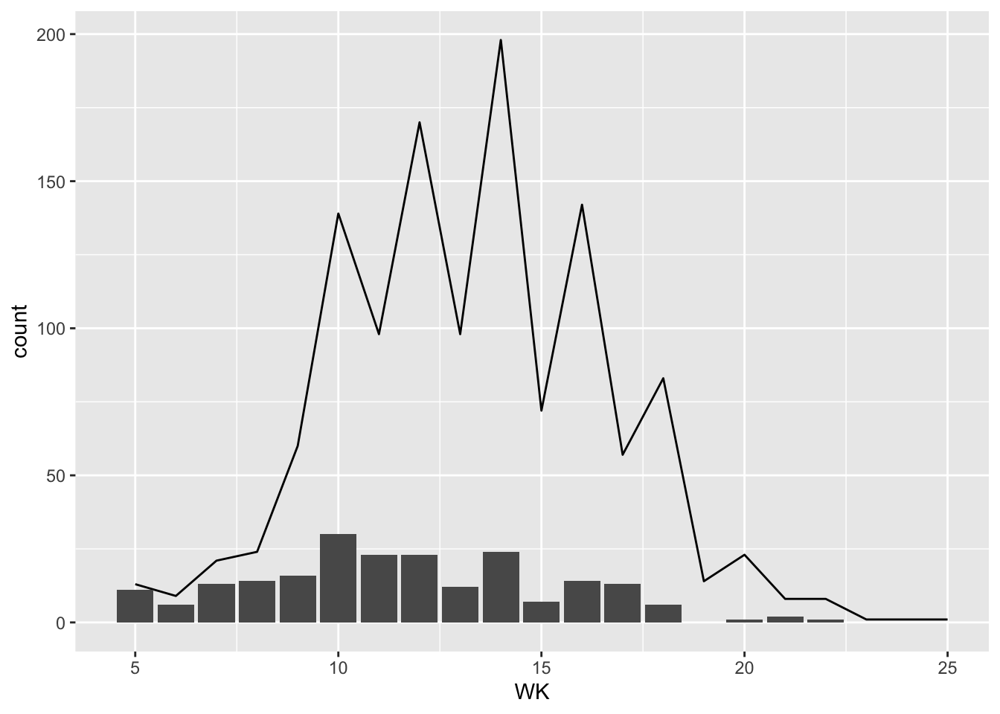
可以看出e3g的填答1時，和其他問題的數值合，其分布不集中在數值較低者，意即當填答者回答e3g為1時，其他題目的回答多半不是1，答題者面對問題e3g和其他問題時的填答方向不一致，因此推論問題e3g在此與指數中的題目一致性不高，不具有外部鑑別力。
# e3h #
Tab(data1, 'e3h', 1, 'WK') Freq. Percent Cum.
5 12 3.315 3.315
6 9 2.486 5.801
7 13 3.591 9.392
8 16 4.420 13.812
9 26 7.182 20.994
10 41 11.326 32.320
11 31 8.564 40.884
12 45 12.431 53.315
13 34 9.392 62.707
14 49 13.536 76.243
15 18 4.972 81.215
16 28 7.735 88.950
17 19 5.249 94.199
18 10 2.762 96.961
19 2 0.552 97.514
20 4 1.105 98.619
21 1 0.276 98.895
22 3 0.829 99.724
25 1 0.276 100.000
Total 362 100.000 NAggplot()+
geom_line(data = data1, aes(x = WK), stat = "count")+
geom_bar(data = data1[data1$e3h == 1, ], aes(x = WK))可以看出e3h的填答1時，和其他問題的數值合，其分布不集中在數值較低者，意即當填答者回答e3h為1時，其他題目的回答多半不是1，答題者面對問題e3h和其他問題時的填答方向不一致，因此推論問題e3h在此與指數中的題目一致性不高，不具有外部鑑別力。
臺灣社會變遷基本調查 7期2次 家庭
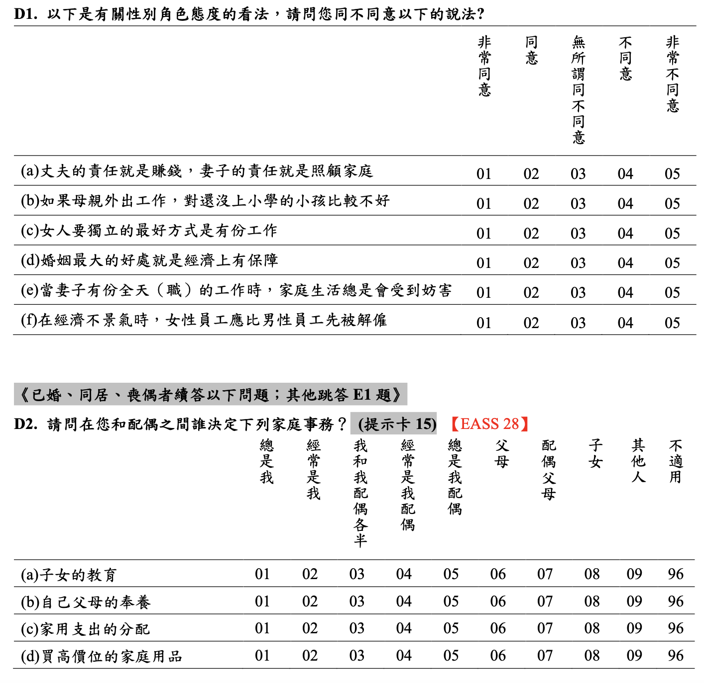
tscs161 <- read_dta('../../../HW/tscs161.dta', encoding = 'big5')
indexName <- c('a1', paste0('d1', letters[1:6]), paste0('d2', letters[1:4]))
data1 <- tscs161[, indexName] |> setDT()我們想要測量性別偏見，由於用於外部鑑別的D2題組選項6-96無法顯示對性別的偏見，因此我們保留作答1-5的受試者，並將女性的1-5反向編碼，此時回答1代表的是總是丈夫在做家事，5代表總是妻子在做家事。
data1 <- data1[data1[, Reduce(`&`, lapply(.SD, `<=`, 5)), .SDcols = indexName], ..indexName]
data2 <- data1[a1 == 2]
data2$d2a <- car::recode(data2$d2a, '1=5;2=4;4=2;5=1')
data2$d2b <- car::recode(data2$d2b, '1=5;2=4;4=2;5=1')
data2$d2c <- car::recode(data2$d2c, '1=5;2=4;4=2;5=1')
data2$d2d <- car::recode(data2$d2d, '1=5;2=4;4=2;5=1')
data3 <- rbind(data1[a1 == 1], data2)
data3 <- data3[, MH := d1a + d1b + d1c + d1d + d1e + d1f] |> data.frame()Tab(data3, 'MH', c(7:28), 'MH')Warning in data[, i] == code: longer object length is not a multiple of shorter
object length
Warning in data[, i] == code: longer object length is not a multiple of shorter
object length Freq. Percent Cum.
11 1 3.333 3.333
13 2 6.667 10.000
14 1 3.333 13.333
16 1 3.333 16.667
17 3 10.000 26.667
18 7 23.333 50.000
19 2 6.667 56.667
20 3 10.000 66.667
21 3 10.000 76.667
22 2 6.667 83.333
23 1 3.333 86.667
24 1 3.333 90.000
25 1 3.333 93.333
26 2 6.667 100.000
Total 30 100.000 NAggplot()+
geom_bar(data = data3, aes(x = MH))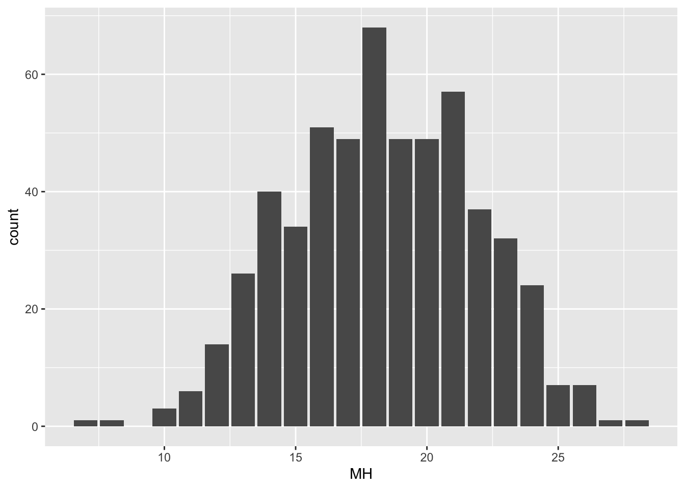
Tab(data3, 'd1a', 5, 'MH') Freq. Percent Cum.
10 1 1.136 1.136
12 1 1.136 2.273
14 1 1.136 3.409
15 2 2.273 5.682
16 5 5.682 11.364
17 5 5.682 17.045
18 9 10.227 27.273
19 8 9.091 36.364
20 6 6.818 43.182
21 14 15.909 59.091
22 8 9.091 68.182
23 8 9.091 77.273
24 9 10.227 87.500
25 3 3.409 90.909
26 6 6.818 97.727
27 1 1.136 98.864
28 1 1.136 100.000
Total 88 100.000 NAggplot()+
geom_line(data = data3, aes(x = MH), stat = "count")+
geom_bar(data = data3[data3$d1a == 5, ], aes(x = MH))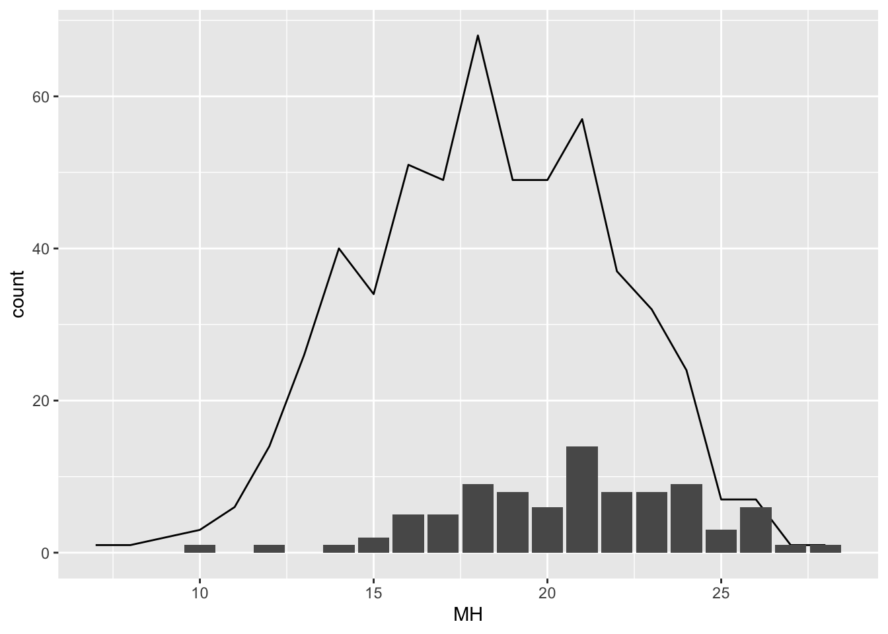
Tab(data3, 'd1b', 5, 'MH') Freq. Percent Cum.
16 2 6.452 6.452
17 2 6.452 12.903
18 1 3.226 16.129
19 1 3.226 19.355
20 2 6.452 25.806
21 5 16.129 41.935
22 2 6.452 48.387
23 2 6.452 54.839
24 5 16.129 70.968
25 4 12.903 83.871
26 4 12.903 96.774
28 1 3.226 100.000
Total 31 100.000 NAggplot()+
geom_line(data = data3, aes(x = MH), stat = "count")+
geom_bar(data = data3[data3$d1b == 5, ], aes(x = MH))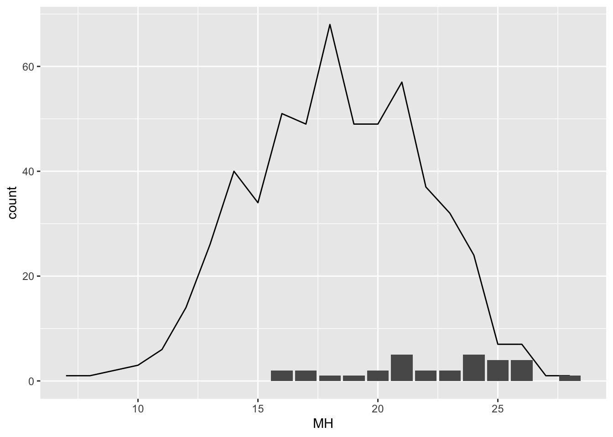
Tab(data3, 'd1c', 5, 'MH') Freq. Percent Cum.
14 2 33.333 33.333
21 1 16.667 50.000
22 1 16.667 66.667
26 2 33.333 100.000
Total 6 100.000 NAggplot()+
geom_line(data = data3, aes(x = MH), stat = "count")+
geom_bar(data = data3[data3$d1c == 5, ], aes(x = MH))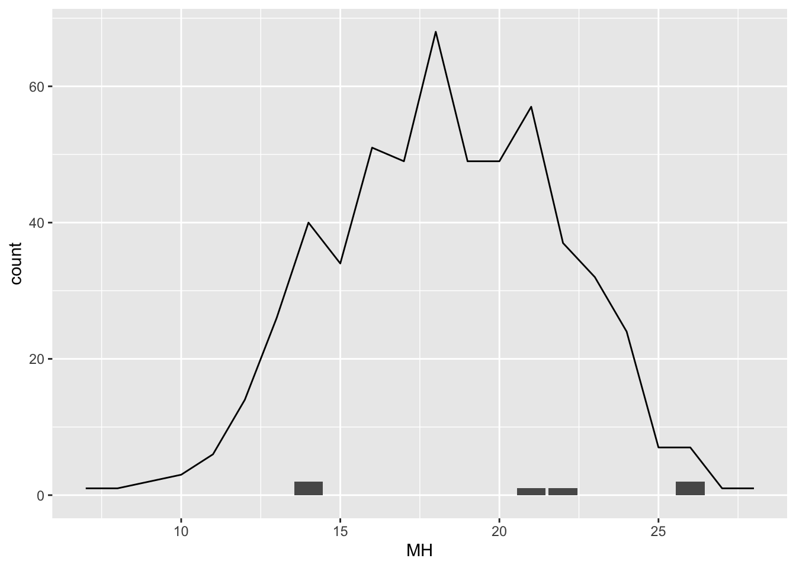
Tab(data3, 'd1d', 5, 'MH') Freq. Percent Cum.
13 1 1.695 1.695
15 4 6.780 8.475
16 2 3.390 11.864
17 3 5.085 16.949
18 3 5.085 22.034
19 6 10.169 32.203
20 2 3.390 35.593
21 10 16.949 52.542
22 7 11.864 64.407
23 6 10.169 74.576
24 6 10.169 84.746
25 4 6.780 91.525
26 4 6.780 98.305
28 1 1.695 100.000
Total 59 100.000 NAggplot()+
geom_line(data = data3, aes(x = MH), stat = "count")+
geom_bar(data = data3[data3$d1d == 5, ], aes(x = MH))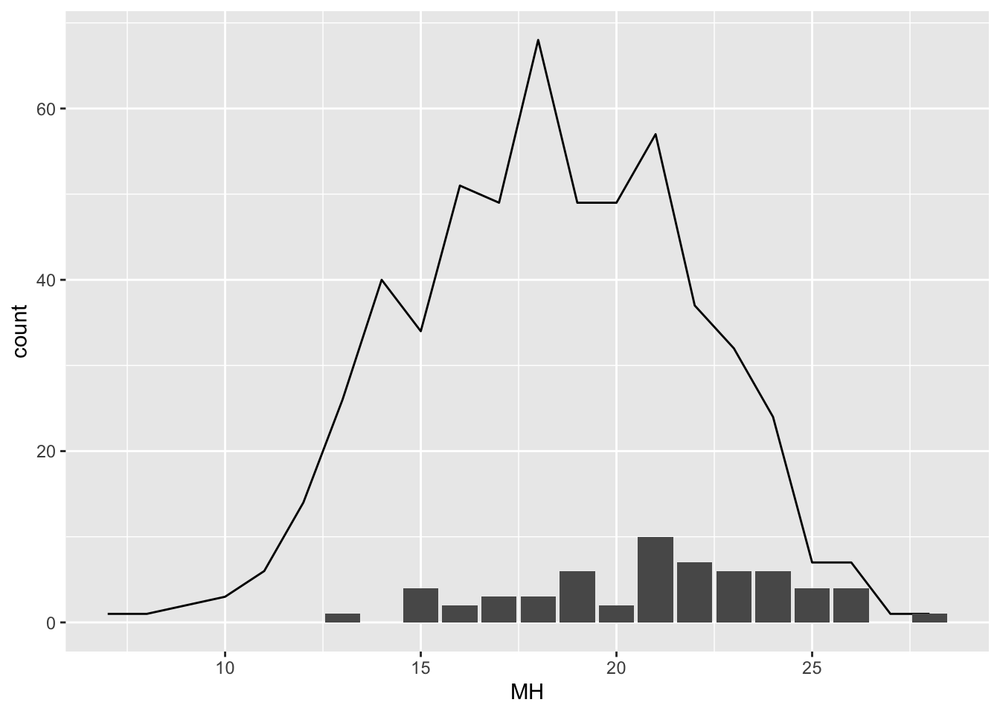
Tab(data3, 'd1e', 5, 'MH') Freq. Percent Cum.
18 2 7.692 7.692
20 1 3.846 11.538
21 6 23.077 34.615
22 2 7.692 42.308
23 3 11.538 53.846
24 7 26.923 80.769
25 2 7.692 88.462
26 2 7.692 96.154
27 1 3.846 100.000
Total 26 100.000 NAggplot()+
geom_line(data = data3, aes(x = MH), stat = "count")+
geom_bar(data = data3[data3$d1e == 5, ], aes(x = MH))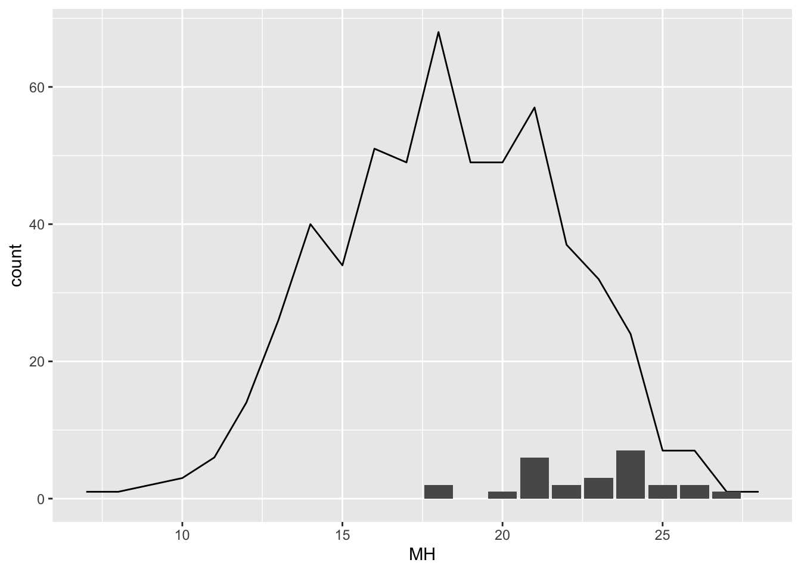
Tab(data3, 'd1f', 5, 'MH') Freq. Percent Cum.
10 1 0.459 0.459
11 1 0.459 0.917
13 5 2.294 3.211
14 6 2.752 5.963
15 8 3.670 9.633
16 13 5.963 15.596
17 22 10.092 25.688
18 16 7.339 33.028
19 24 11.009 44.037
20 13 5.963 50.000
21 32 14.679 64.679
22 18 8.257 72.936
23 30 13.761 86.697
24 13 5.963 92.661
25 7 3.211 95.872
26 7 3.211 99.083
27 1 0.459 99.541
28 1 0.459 100.000
Total 218 100.000 NAggplot()+
geom_line(data = data3, aes(x = MH), stat = "count")+
geom_bar(data = data3[data3$d1f == 5, ], aes(x = MH))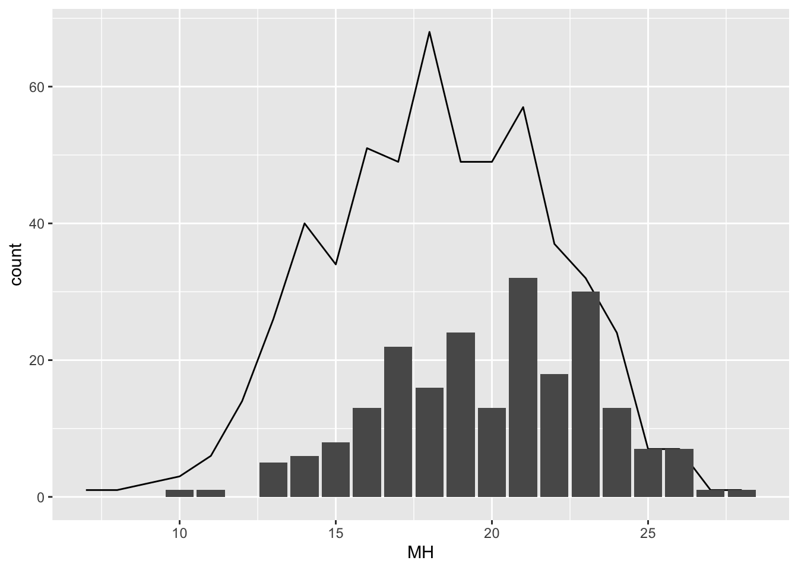